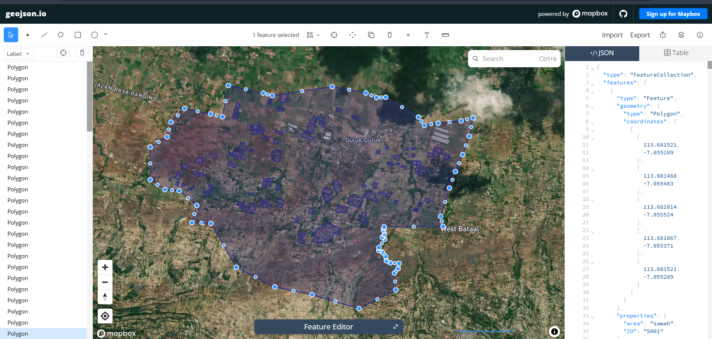
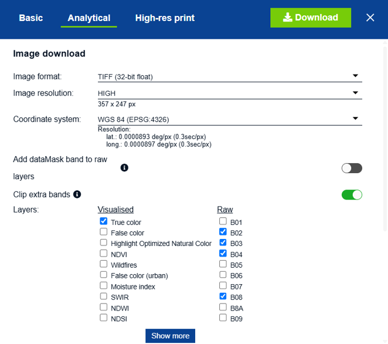
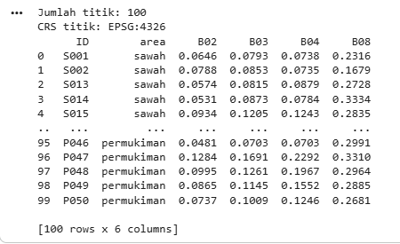
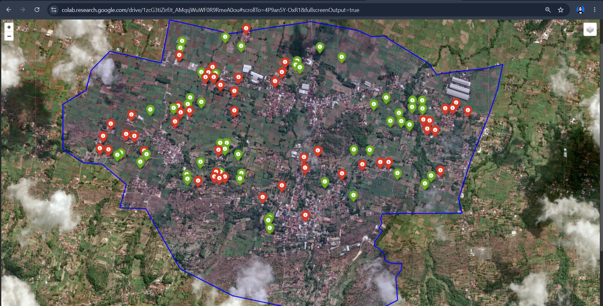
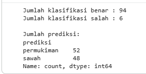

Klasifikasi Sawah dan Pemukiman Menggunakan Citra Sentinel-2A#
Tujuan#
Melakukan pemetaan dan klasifikasi lahan untuk membedakan area sawah dan pemukiman menggunakan data GeoJSON dan citra Sentinel-2A.
Tahapan pengerjaan meliputi:
Menyiapkan data GeoJSON.
Menentukan 100 titik sampel, terdiri dari 50 sawah dan 50 pemukiman.
Membuat area penelitian atau AOI (Area of Interest).
Menyiapkan citra Sentinel-2A dalam format TIF.
Mengekstraksi nilai band B02, B03, B04, dan B08 pada 100 titik.
Melakukan klasifikasi menggunakan Random Forest.
Mengevaluasi hasil klasifikasi.
Membuat peta hasil prediksi.
Menyimpan tabel hasil klasifikasi.
Tahap 1 — Persiapan Data GeoJSON#
Data awal berupa Titik_Area.geojson yang berisi data area sawah dan pemukiman.
File GeoJSON dibaca menggunakan GeoPandas.
from google.colab import files
uploaded = files.upload()
import geopandas as gpd
gdf = gpd.read_file("/content/Titik_Area.geojson")
print(gdf.head())
print(gdf.shape)
print(gdf.geom_type.value_counts())
Data kemudian difilter sehingga hanya menyisakan dua kelas yang digunakan dalam penelitian, yaitu sawah dan permukiman.
gdf = gdf[gdf["area"].isin(["sawah", "permukiman"])].copy()
print("Jumlah data:", len(gdf))
print(gdf["area"].value_counts())

Hasilnya terdapat 100 data, terdiri dari:50 titik/area sawah
50 titik/area pemukiman
Tahap 2 — Membuat Titik Sampel dan GeoJSON Point#
Data awal berupa polygon diubah menjadi titik menggunakan representative_point(). Metode ini menghasilkan titik yang berada di dalam masing-masing polygon.
gdf["geometry"] = gdf.geometry.representative_point()
print(gdf.geom_type.value_counts())
Hasilnya seluruh geometri menjadi 100 Point. Selanjutnya titik disimpan dalam format GeoJSON.
gdf.to_file(
"/content/Titik_Area_Point.geojson",
driver="GeoJSON"
)
print("Berhasil disimpan!")
File hasil: Titik_Area_Point.geojson File tersebut kemudian dapat diunduh dari Google Colab.
from google.colab import files
files.download("/content/Titik_Area_Point.geojson")
Tahap 3 — Menentukan AOI (Area of Interest)#
AOI digunakan untuk menentukan area penelitian yang menjadi cakupan pengolahan citra Sentinel-2A. AOI dibuat dalam bentuk polygon berdasarkan koordinat yang telah ditentukan.
import geopandas as gpd
from shapely.geometry import Polygon
aoi_coords = [
[113.673587, -7.04927],
[113.66764, -7.050158],
[113.666744, -7.049908],
[113.663299, -7.049155],
[113.662702, -7.052255],
[113.661531, -7.051981],
[113.658959, -7.051434],
[113.657604, -7.052779],
[113.657214, -7.054238],
[113.655538, -7.05524],
[113.65553, -7.058471],
[113.657, -7.059451],
[113.658401, -7.059565],
[113.660156, -7.061021],
[113.659674, -7.062711],
[113.661563, -7.062785],
[113.664081, -7.067121],
[113.667895, -7.069069],
[113.671594, -7.069823],
[113.676247, -7.071216],
[113.679897, -7.069375],
[113.679762, -7.067699],
[113.680124, -7.067249],
[113.680216, -7.066743],
[113.679343, -7.066694],
[113.67896, -7.066479],
[113.678898, -7.066037],
[113.678545, -7.065625],
[113.678198, -7.065478],
[113.678229, -7.065171],
[113.678799, -7.06436],
[113.678551, -7.064157],
[113.678766, -7.063844],
[113.678673, -7.063488],
[113.678723, -7.063264],
[113.678757, -7.063129],
[113.684585, -7.063087],
[113.684342, -7.062092],
[113.685215, -7.059292],
[113.686538, -7.055993],
[113.687168, -7.054168],
[113.68756, -7.05236],
[113.686374, -7.05265],
[113.684092, -7.052886],
[113.68273, -7.053089],
[113.682134, -7.052278],
[113.678899, -7.050318],
[113.677997, -7.050352],
[113.676941, -7.049895],
[113.673587, -7.04927]
]
aoi_polygon = Polygon(aoi_coords)
aoi = gpd.GeoDataFrame(
{"nama": ["AOI Penelitian"]},
geometry=[aoi_polygon],
crs="EPSG:4326"
)
print(aoi)
Tahap 4 — Pemeriksaan 100 Titik#
titik = gpd.read_file("/content/Titik_Area_Point.geojson")
print("Jumlah titik:", len(titik))
print(titik["area"].value_counts())
Hasilnya:
100 titik keseluruhan
50 titik sawah
50 titik pemukiman
Tahap 5 — Pemetaan AOI dan Titik Sampel#
Pemetaan dilakukan menggunakan Folium. AOI ditampilkan sebagai polygon dan titik sampel ditampilkan berdasarkan kelas.
Sawah → marker hijau
Pemukiman → marker merah
import folium
center = [
aoi.geometry.centroid.y.iloc[0],
aoi.geometry.centroid.x.iloc[0]
]
m = folium.Map(
location=center,
zoom_start=15
)
folium.GeoJson(
aoi,
name="AOI Penelitian",
style_function=lambda feature: {
"color": "blue",
"weight": 3,
"fillColor": "blue",
"fillOpacity": 0.10
},
tooltip="AOI Penelitian"
).add_to(m)
for _, row in titik.iterrows():
if row["area"] == "sawah":
warna = "green"
else:
warna = "red"
folium.Marker(
location=[
row.geometry.y,
row.geometry.x
],
popup=f'ID: {row["ID"]}<br>Area: {row["area"]}',
icon=folium.Icon(
color=warna,
icon="info-sign"
)
).add_to(m)
folium.LayerControl().add_to(m)
m
Tahap 6 — Menyiapkan Citra Sentinel-2A#

Citra Sentinel-2A digunakan sebagai sumber data spektral untuk klasifikasi. Data citra yang digunakan berbentuk file TIF. File TIF diunggah ke Google Colab. sentinel-2A_4.zipfrom google.colab import files
uploaded = files.upload()
Informasi raster diperiksa menggunakan Rasterio.
import rasterio
import os
tif_file = [
f for f in uploaded.keys()
if f.lower().endswith((".tif", ".tiff"))
][0]
print("File TIF:", tif_file)
with rasterio.open(tif_file) as src:
print("Jumlah band :", src.count)
print("Lebar :", src.width)
print("Tinggi :", src.height)
print("CRS :", src.crs)
print("Resolusi :", src.res)
print("Bounds :", src.bounds)
Tahap 7 — Menyiapkan Band Sentinel-2A#
Band |
Keterangan |
|---|---|
B02 |
Blue |
B03 |
Green |
B04 |
Red |
B08 |
Near Infrared (NIR) |
File citra kemudian diekstrak dari file ZIP.
from google.colab import files
uploaded = files.upload()
import zipfile
import os
zip_file = [
f for f in uploaded.keys()
if f.lower().endswith(".zip")
][0]
extract_folder = "/content/citra_sentinel"
with zipfile.ZipFile(zip_file, "r") as zip_ref:
zip_ref.extractall(extract_folder)
print("Isi file:")
for root, dirs, files_ in os.walk(extract_folder):
for file in files_:
print(os.path.join(root, file))
Tahap 8 — Ekstraksi Nilai Band pada 100 Titik#
import geopandas as gpd
import rasterio
import pandas as pd
titik = gpd.read_file(
"/content/Titik_Area_Point.geojson"
)
print("Jumlah titik:", len(titik))
print("CRS titik:", titik.crs)
band_files = {
"B02": "/content/citra_sentinel/B02_(Raw).tiff",
"B03": "/content/citra_sentinel/B03_(Raw).tiff",
"B04": "/content/citra_sentinel/B04_(Raw).tiff",
"B08": "/content/citra_sentinel/B08_(Raw).tiff"
}
with rasterio.open(band_files["B02"]) as src:
titik = titik.to_crs(src.crs)
for nama_band, file_tif in band_files.items():
with rasterio.open(file_tif) as src:
koordinat = [
(geom.x, geom.y)
for geom in titik.geometry
]
nilai = [
hasil[0]
for hasil in src.sample(koordinat)
]
titik[nama_band] = nilai
hasil = titik[
["ID", "area", "B02", "B03", "B04", "B08"]
]
print(hasil)

Hasil ekstraksi menghasilkan dataset dengan enam kolom:
ID
area
B02
B03
B04
B08
File hasil: hasil_ekstraksi_sentinel.csv
Dataset ini menjadi input untuk proses klasifikasi.
Tahap 9 — Menyimpan Dataset Hasil Ekstraksi#
Hasil ekstraksi disimpan dalam format CSV.
hasil.to_csv(
"/content/hasil_ekstraksi_sentinel.csv",
index=False
)
print("File berhasil disimpan:")
print("/content/hasil_ekstraksi_sentinel.csv")
File hasil: hasil_ekstraksi_sentinel.csv File tersebut berisi nilai B02, B03, B04, dan B08 untuk seluruh 100 titik.
Tahap 10 — Menyiapkan Data Training dan Testing#
Klasifikasi dilakukan menggunakan empat band Sentinel-2A sebagai fitur.
from sklearn.model_selection import train_test_split
X = hasil[
["B02", "B03", "B04", "B08"]
]
y = hasil["area"]
X_train, X_test, y_train, y_test = train_test_split(
X,
y,
test_size=0.20,
random_state=42,
stratify=y
)
print("Data training :", len(X_train))
print("Data testing :", len(X_test))
Data dibagi menjadi:
80% data training
20% data testing Parameter stratify=y digunakan untuk mempertahankan proporsi kelas sawah dan pemukiman.
Tahap 11 — Klasifikasi Random Forest#
Metode klasifikasi yang digunakan adalah Random Forest Classifier.
from sklearn.ensemble import RandomForestClassifier
from sklearn.metrics import (
accuracy_score,
classification_report,
confusion_matrix
)
model = RandomForestClassifier(
n_estimators=100,
random_state=42
)
model.fit(X_train, y_train)
y_pred = model.predict(X_test)
akurasi = accuracy_score(
y_test,
y_pred
)
print("Akurasi:", akurasi)
print("\nClassification Report:")
print(
classification_report(
y_test,
y_pred
)
)
print("\nConfusion Matrix:")
print(
confusion_matrix(
y_test,
y_pred
)
)
Random Forest digunakan untuk mempelajari pola nilai spektral B02, B03, B04, dan B08 dari data training sehingga dapat memprediksi kelas lahan pada data testing.
Tahap 12 — Prediksi Seluruh 100 Titik#
X_semua = hasil[
["B02", "B03", "B04", "B08"]
]
hasil["prediksi"] = model.predict(X_semua)
print(
hasil[
["ID", "area", "prediksi"]
].head(20)
)
Kolom prediksi berisi hasil klasifikasi model untuk setiap titik.
Tahap 13 — Pemetaan Hasil Klasifikasi#
Hasil prediksi divisualisasikan menggunakan Folium. Warna marker menunjukkan hasil prediksi:
Hijau = sawah
Merah = pemukiman
import folium
center_lat = titik.geometry.y.mean()
center_lon = titik.geometry.x.mean()
m = folium.Map(
location=[center_lat, center_lon],
zoom_start=15
)
for _, row in titik.iterrows():
prediksi = hasil.loc[
hasil["ID"] == row["ID"],
"prediksi"
].iloc[0]
if prediksi == "sawah":
warna = "green"
else:
warna = "red"
folium.Marker(
location=[
row.geometry.y,
row.geometry.x
],
popup=(
f"<b>ID:</b> {row['ID']}<br>"
f"<b>Aktual:</b> {row['area']}<br>"
f"<b>Prediksi:</b> {prediksi}"
),
icon=folium.Icon(
color=warna,
icon="info-sign"
)
).add_to(m)
m

Tahap 14 — Membuat Tabel Hasil Klasifikasi#
tabel_klasifikasi = hasil[
["ID", "area", "prediksi"]
].copy()
tabel_klasifikasi["status"] = tabel_klasifikasi.apply(
lambda row:
"Benar"
if row["area"] == row["prediksi"]
else "Salah",
axis=1
)
print(
tabel_klasifikasi.to_string(
index=False
)
)
No |
ID |
Area |
Prediksi |
Status |
|---|---|---|---|---|
48 |
S026 |
sawah |
sawah |
Benar |
49 |
S027 |
sawah |
sawah |
Benar |
50 |
P013 |
permukiman |
permukiman |
Benar |
51 |
S029 |
sawah |
sawah |
Benar |
52 |
P014 |
permukiman |
permukiman |
Benar |
Kolom status digunakan untuk menunjukkan apakah prediksi model sesuai dengan kelas aktual.
Tahap 15 — Menyimpan Hasil Klasifikasi#
tabel_klasifikasi.to_excel(
"/content/tabel_hasil_klasifikasi_100_titik.xlsx",
index=False
)
from google.colab import files
files.download(
"/content/tabel_hasil_klasifikasi_100_titik.xlsx"
)
File keluaran: tabel_hasil_klasifikasi_100_titik.xlsx
Tahap 16 — Ringkasan Hasil Klasifikasi#
ringkasan = (
tabel_klasifikasi["status"]
.value_counts()
)
print(
"Jumlah klasifikasi benar :",
ringkasan.get("Benar", 0)
)
print(
"Jumlah klasifikasi salah :",
ringkasan.get("Salah", 0)
)
print("\nJumlah prediksi:")
print(
tabel_klasifikasi[
"prediksi"
].value_counts()
)

Ringkasan ini digunakan untuk melihat hasil akhir klasifikasi pada seluruh titik sampel.
Tahap 17 — Kesimpulan#
Berdasarkan proses yang dilakukan, klasifikasi lahan dilakukan menggunakan data titik GeoJSON dan citra Sentinel-2A. Data terdiri dari 100 titik sampel, yaitu:
50 titik sawah
50 titik pemukiman Citra Sentinel-2A yang digunakan terdiri dari empat band:
B02
B03
B04
B08
Nilai keempat band diekstraksi pada setiap titik dan digunakan sebagai fitur dalam model Random Forest. Model dilatih menggunakan 80% data dan diuji menggunakan 20% data. Evaluasi dilakukan menggunakan accuracy, classification report, dan confusion matrix.
Hasil klasifikasi kemudian diterapkan pada seluruh 100 titik, divisualisasikan dalam bentuk peta, dan disimpan dalam tabel hasil klasifikasi. Dengan demikian, alur pengerjaan tugas telah mencakup proses: GeoJSON → Titik Sampel → AOI → Sentinel-2A/TIF → Ekstraksi Band → Random Forest → Evaluasi → Pemetaan Hasil → Tabel Klasifikasi.